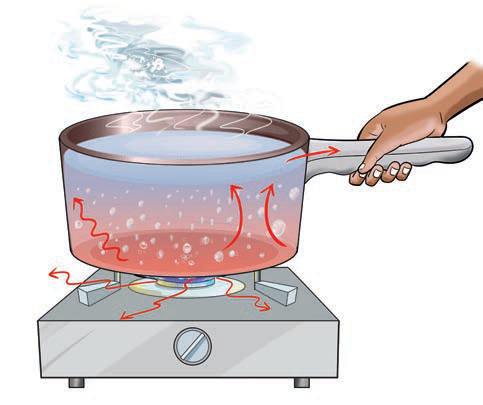
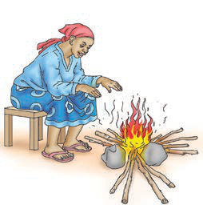

(c) Mnunurisho ni usafirishaji wa nishati ya joto kwenye nafasi tupu kama vile hewa. Katika Jaribio namba 3, hewa imetumika kama sehemu tupu kwa sababu ina sifa inayokaribiana na sehemu tupu. Kielelezo namba 5 kinaonesha au kinabainisha aina tatu za usafirishaji wa nishati ya joto.

Maelezo ya picha: Sufuria ya maji inapashwa moto juu ya jiko. Mishale inaonyesha joto likisafiri kwenye sufuria, maji, hewa na mpini.Kielelezo namba 5: aina tatu za usafirishaji wa nishati ya joto.
Matumizi ya nishati ya joto
Joto hutumika katika mambo mbalimbali kama inavyooneshwa kwenye Jedwali namba 2.
Jedwali namba 2: Matumizi ya nishati ya joto
Picha
Maelezo

Maelezo ya picha: Mwanamke anajiota karibu na moto wa kuni ili kujikinga na baridi.Kuota moto ili kujihifadhi dhidi ya baridi.